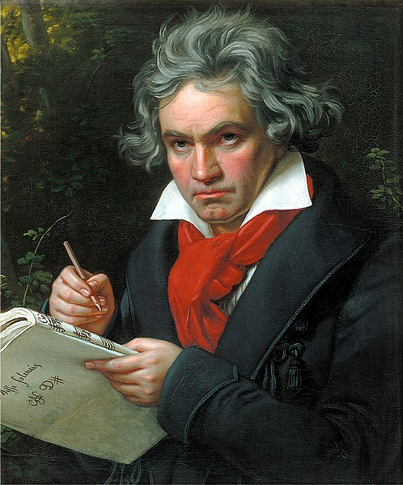

|  |
IntroductionBeethoven remains one of the most admired composers in the history of Western music; his works rank amongst the most performed of the classical music repertoire. His works span the transition from the classical period to the romantic era in classical music. His career has conventionally been divided into early, middle, and late periods. The "early" period, during which he forged his craft, is typically considered to have lasted until 1802. From 1802 to around 1812, his "middle" period showed an individual development from the "classical" styles of Joseph Haydn and Wolfgang Amadeus Mozart, and is sometimes characterized as "heroic". During this time, he began to suffer increasingly from deafness. In his "late" period from 1812 to his death in 1827, he extended his innovations in musical form and expression. |
|---|